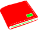
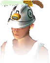
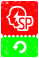
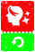

หน้าแรก › สังคมและเศรษฐกิจ
ตลาดและร้านค้า ใช้ได้
ซื้อขายของกับผู้เล่นอื่นที่ตลาดด้วยทีสโตน และซื้อของจากร้านค้าด้วยทีสโตน — เซิร์ฟนี้ใช้เงินสกุลเดียว ไม่มีเติมเงินจริง
บางหัวข้อในหน้านี้ยังไม่เสร็จ

เงินหลักของเซิร์ฟนี้คือ ทีสโตน — ใช้ซื้อขายกับผู้เล่นอื่นที่ ตลาด ซื้อของใน ร้านค้า จ่ายค่าส่งของ ค่าสร้างแคลน และอื่น ๆ เซิร์ฟนี้ ไม่มีการเติมเงินจริง ทุกอย่างซื้อด้วยทีสโตนที่หาได้ในเกม
ทำอะไรได้บ้าง
- ลงขายของจากกระเป๋าที่ตลาด ตั้งราคาเอง
- ค้นหา/กรองสินค้า แล้วซื้อของที่คนอื่นลงขาย
- กดดาวเก็บสินค้าที่สนใจไว้ใน บุ๊กมาร์ก
- รับเงินค่าขาย · เอาของที่ขายไม่ออกคืน
- ซื้อ ตั๋วรีเซ็ตสกิล จาก ร้านค้า (ตอนนี้ร้านขายรายการเดียว)
เงินในเกม ใช้ได้

เซิร์ฟนี้ใช้ กระเป๋าเดียว คือทีสโตน| เงิน | ใช้ทำอะไร |
|---|---|
| ทีสโตน | เงินหลัก — ตลาด ร้านค้า ค่าส่งของ ค่าสร้างแคลน กองทุนแคลน ฯลฯ · ถือได้สูงสุด 99,999,999 |
| ความภักดี | แต้มแยกที่ได้เป็นโบนัสจากบางสินค้าในร้านค้า — ใช้ใน ร้านค้าสมนาคุณ |
| บัตร/ตั๋ว | ของบางอย่างเป็นบัตร (เช่น บัตรเปิดแผนที่) เก็บแยกในกระเป๋าเงิน |
ในร้านค้าราคาโชว์เป็นไอคอน Gem/Coin — ในเซิร์ฟนี้ หักเป็นทีสโตนเท่ากับตัวเลขที่เห็น (1 ต่อ 1) และยอดที่โชว์ใต้ไอคอน Gem/Coin ก็คือยอดทีสโตนของคุณ
หาทีสโตนได้จาก: ค้นพบจุดใหม่บนแผนที่และรางวัลสำรวจครบเกาะ · ภารกิจ · เช็คชื่อรายวัน · มินิเกม · วาร์ป · จดหมายของขวัญ (จดหมาย) · ขายของที่ตลาด
ตลาด: ลงขาย ใช้ได้
- เปิดเมนู ตลาด → แท็บ ขาย
- เลือกของจากกระเป๋า (ของที่สวมอยู่หรือล็อกไว้ ลงขายไม่ได้)
- ตั้งราคาต่อชิ้นและระยะเวลาขาย → ยืนยัน — ของออกจากกระเป๋าทันที
- ระหว่างขายกด ยกเลิกลงประกาศ ได้ตลอด ของกลับเข้ากระเป๋า
- เลือกหลายชิ้นพร้อมกันได้ แต่ละชิ้นขึ้นขายแยกกันในราคาเท่ากัน
- ขายเป็น ชิ้นจริง — ผู้ซื้อได้ความทน สี และแท็กเดิมของชิ้นนั้น
- อาหารที่ลงขาย ไม่เน่า ระหว่างอยู่ในตลาด (ดู ถนอมอาหาร)
ตลาด: ค้นหาและซื้อ ใช้ได้
- ค้นหาตามชื่อ หมวด แท็ก ช่วงราคา ช่วงเลเวล แล้วเรียงตามราคา เวลา เลเวล หรือความทน
- ปุ่มค้นหาในตลาดมีทางลัดจากหลายหน้า เช่น ช่องวัสดุตอนสร้าง/ซ่อม
- กด ซื้อ → จ่ายทีสโตน ของเข้ากระเป๋าทันที · ซื้อของตัวเองไม่ได้
- กดดาวเก็บสินค้าไว้ใน บุ๊กมาร์ก — เซิร์ฟจำไว้ข้ามการออกเกม
ตลาด: รับเงินและของที่ขายไม่ออก ใช้ได้
- ขายได้แล้ว ถ้าออนไลน์อยู่จะมีแจ้งเตือน → ไปแท็บ ประวัติการขาย กด รับ ทีละรายการหรือรับทั้งหมด — เงินยังไม่เข้ากระเป๋าจนกว่าจะกดรับ
- หมดเวลาขายแล้วไม่มีคนซื้อ → ของไปอยู่แท็บ หมดอายุ กด เก็บรวบรวม เอาคืน
- ถ้าไม่เอาคืนภายในเวลาที่กำหนด เซิร์ฟ ส่งของคืนทางจดหมาย ให้เอง (ของไม่หาย)
ตัวเลขตลาด
| เรื่อง | ค่า |
|---|---|
| ค่าธรรมเนียมการขาย | 0% |
| ระยะเวลาขายนานสุด | 7 วัน |
| ลงขายพร้อมกันได้ | 20 ชิ้นต่อคน |
| ผลค้นหาต่อหน้า | 30 รายการ |
| เวลาเอาของหมดอายุคืนเอง | 7 วัน (เลยจากนี้ส่งคืนทางจดหมาย) |
| บุ๊กมาร์กสูงสุด | 100 รายการ (เกินแล้วอันเก่าสุดหลุด) |
ร้านค้า ใช้ได้

ตอนนี้ร้านค้า ขายรายการเดียว คือ

ตั๋วรีเซ็ตสกิล ราคา 9,000 ทีสโตน — ล้างสกิลทั้งหมดแล้วได้คะแนนสกิลคืนเต็ม (สกิล) สินค้าอื่นปิดขายไว้ก่อน · ของที่ซื้อไว้แล้ว (ในกระเป๋าหรือรอรับในที่เก็บของของร้าน) ยังรับและใช้ได้ตามปกติ- กดสินค้า → ซื้อ → หักทีสโตน
- ของไปรอที่แท็บ ที่เก็บของ ของร้าน → กด รับ ทีละชิ้นหรือ รับทั้งหมด
- สินค้าบางชิ้นจำกัดจำนวนครั้งที่ซื้อ หรือจำกัดเลเวลตัวละคร
| เรื่อง | ค่า |
|---|---|
| ราคาที่หน้าร้านโชว์ | คือจำนวนทีสโตนที่หักจริง (ไอคอน Gem/Coin = ทีสโตน 1 ต่อ 1) |
| ของรอรับในที่เก็บของ | หมดอายุใน 30 วันถ้าไม่กดรับ |
| ของรอรับได้สูงสุด | 100 ชิ้น |
ของที่ซื้อจากร้านใช้ยังไง ใช้ได้
| ของ | ใช้ยังไง |
|---|---|
| ตั๋วรีเซ็ตสกิล | กดใช้จากกระเป๋า → ยืนยัน (สกิล) |
| สิ่งปลูกสร้างแบบแคปซูล (เฟอร์นิเจอร์จากแพ็ก/กล่องสุ่ม) | กด วาง จากกระเป๋า → ได้สิ่งปลูกสร้างเลเวลเท่าชิ้น (ไม่เกินเพดานของแบบ) ความทนทานเต็ม |
| บังเหียนสัตว์เลี้ยงจากแพ็กสัตว์ | สัตว์เชื่องแล้ว กด สร้างสายใย ได้ทันที ไม่ต้องเข้ากรง (สัตว์เลี้ยง) |
 การ์ดเปลี่ยนรูปลักษณ์ · การ์ดเปลี่ยนเพศ+รูปลักษณ์ | เลือกหน้าตาใหม่แล้วยืนยัน การ์ดหาย 1 ใบ · เปลี่ยนเพศ = ของที่สวมทั้งหมดถูกถอดเข้ากระเป๋า แล้วเกมจะตัดการเชื่อมต่อให้เข้าใหม่ |
| ยา อาหาร ชุด เครื่องมือ บัตรเปิดแผนที่ | ใช้/สวมตามปกติ |
ส่วนที่ยังไม่เสร็จ ยังไม่เสร็จ
- ร้าน NPC / ตู้ขายของ (คีออสก์) — ยังไม่มีร้านที่ NPC ขายหรือรับซื้อของ
- สินค้าร้านค้าแบบจำกัดต่อช่วงเวลา (รายวัน/รายสัปดาห์) และสินค้าที่ให้ท่าทาง/บัพ — ยังไม่ขาย
- โอน Durango Coin / บัตรซื้อสินค้า — ไม่มีในเซิร์ฟนี้